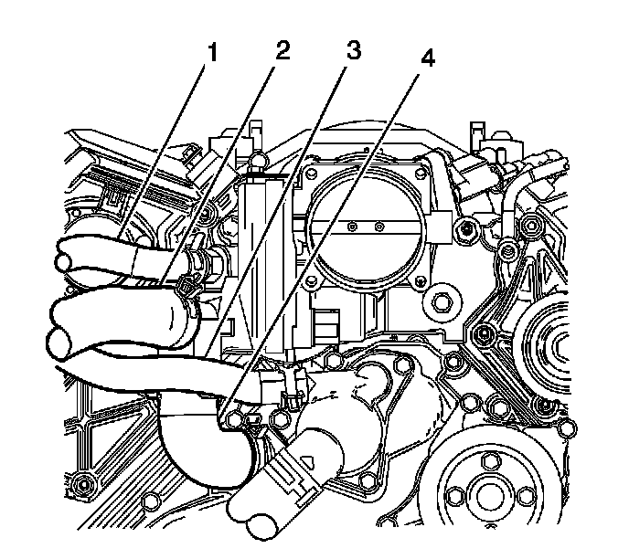
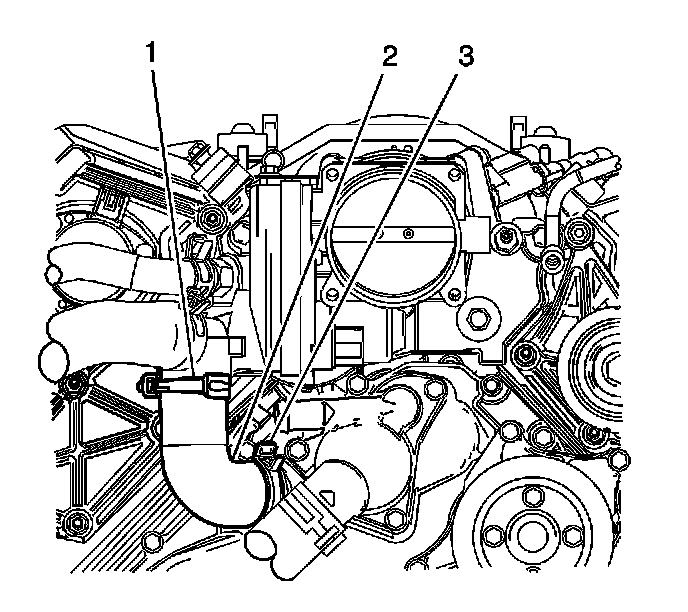

Thermostat Bypass Hose: Service and Repair
Coolant Bypass Hose Replacement (LH2 - Gas, 8 Cylinder, 4.6L, SFI, V8, DOHC, HO)
Removal Procedure

1. Drain the cooling system. Refer to Cooling System Draining and Filling (GE 47716 -Vac N Fill Coolant Refill Tool) (Service and Repair)Cooling System Draining and Filling (Static Fill) (Service and Repair) .
2. Remove the air cleaner outlet duct. Refer to Air Cleaner Outlet Duct Replacement (Service and Repair) .
3. Compress the clamp, and remove the heater outlet hose (3) from the thermostat housing in order to gain access to the bypass hose.

4. Compress the clamps (1, 3) and remove the bypass hose (2) from the water outlet housing and the front cover.
Installation Procedure
1. Compress the clamps (1, 3) and install the bypass hose (2) to the water outlet housing and the front cover.
2. Compress the clamp, and install the heater outlet hose (3) to the thermostat housing.
3. Install the air cleaner outlet duct. Refer to Air Cleaner Outlet Duct Replacement (Service and Repair) .
4. Fill the cooling system. Refer to Cooling System Draining and Filling (GE 47716 -Vac N Fill Coolant Refill Tool) (Service and Repair)Cooling System Draining and Filling (Static Fill) (Service and Repair) .
5. Check the cooling system for leaks.